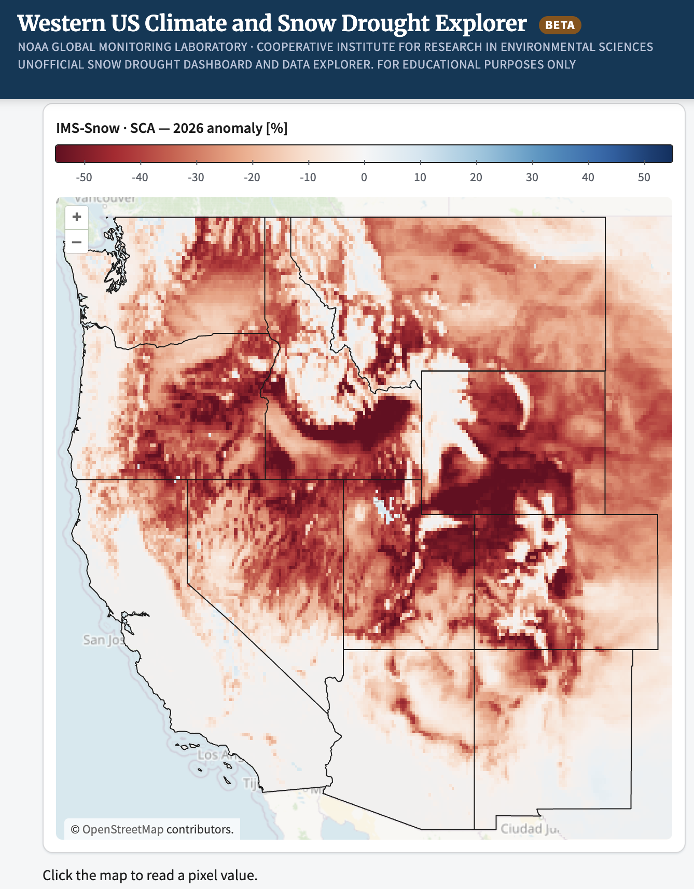
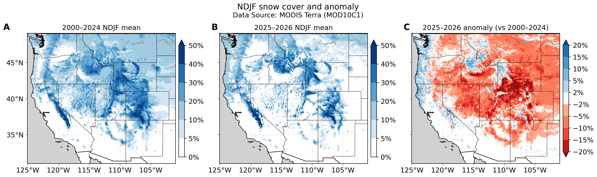
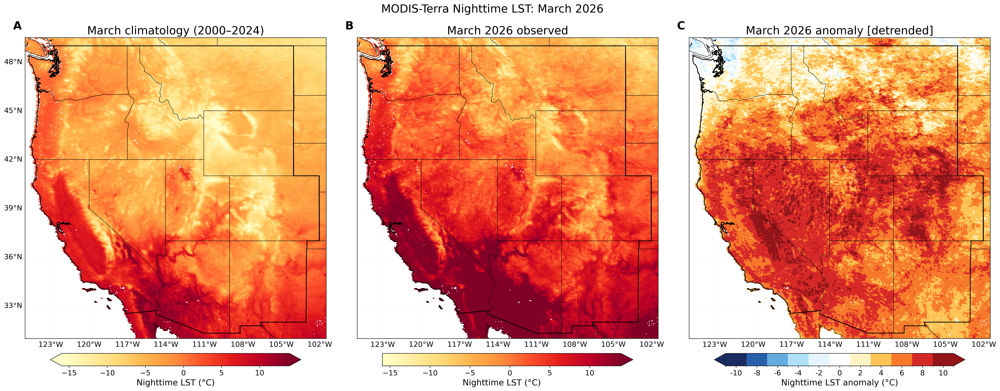
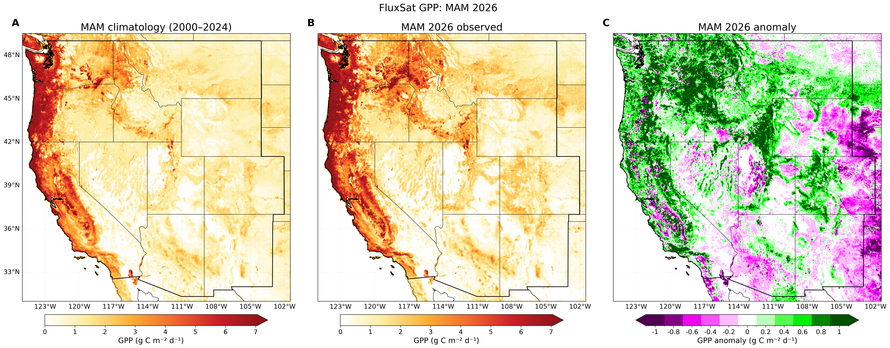
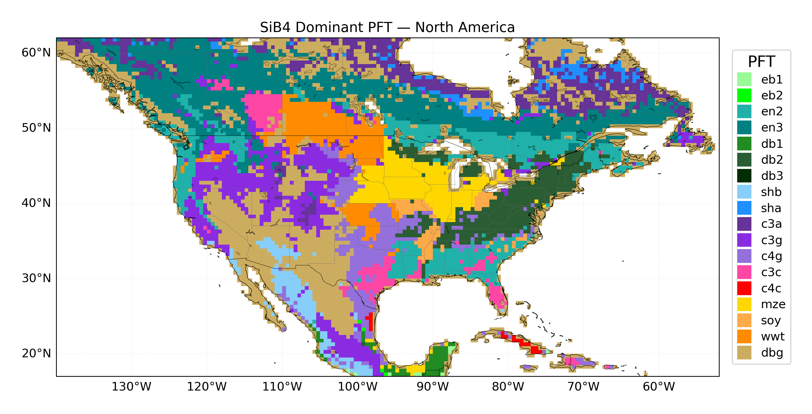
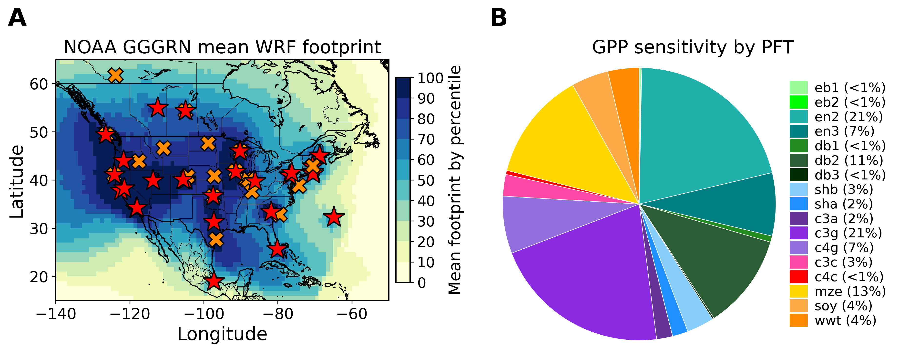
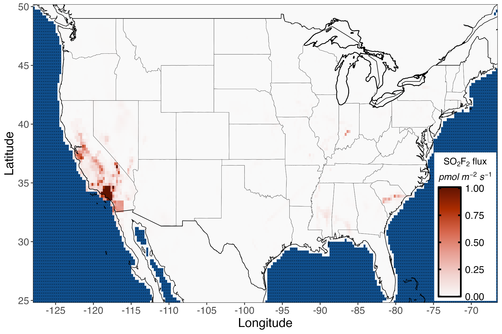
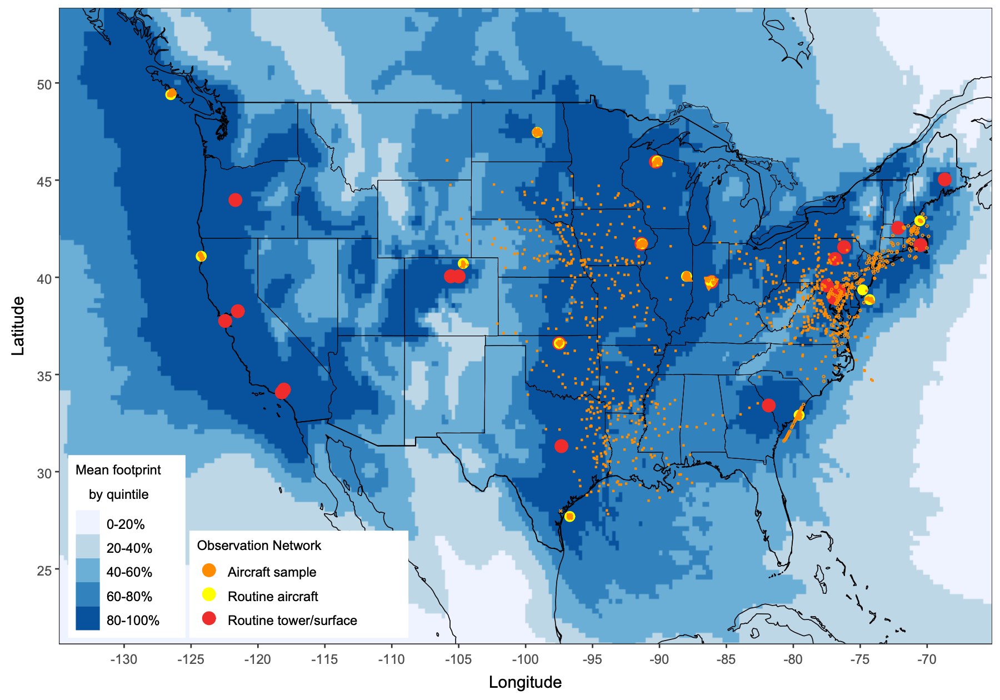

In my work, I use atmospheric measurements of greenhouse gases and air pollutants, along with atmospheric models, inverse models, and process/physics-based models to better understand surface emissions of planet-warming and/or stratospheric ozone-depleting gases. I study both natural (biogenic) and human-caused (anthropogenic) emissions sources with the goal of holistically understanding changes and variations in Earth's atmospheric composition.
I'm broadly interested in greenhouse gases, ozone-depleting substances, air pollution, atmospheric chemistry, climate change, Earth systems, sustainability, and environmental justice.
My current focus is on carbon cycle and drought dynamics in the Western United States, integrating NOAA GGGRN flask measurements; satellite instruments like FluxSat, TROPOMI, OCO-2, GRACE, etc.; reanalysis datasets like ERA5-Land; and process-based models like the Simple Biosphere Model v4 (SiB4).

Research
We recently launched snowdrought.org, an interactive research dashboard with maps, time series, seasonal cycles, and cross-product anomalies of snow, water, carbon, and vegetation across the Western U.S. (1990–2026).
Explore snowdrought.org
Research
MODIS Terra (MOD10C1) wintertime mean (November-February) snow cover shows a widespread negative anomaly across the Western U.S. in 2025–2026 relative to the 2000–2024 baseline, part of ongoing work linking snow drought to biospheric carbon cycle responses.

Research
MODIS Terra nighttime land surface temperature (LST) for March 2026 across the Western U.S.: 2000–2024 climatology, 2026 observed, and detrended anomaly.

Research
FluxSat gross primary production (GPP) for March–May 2026 across the Western U.S.: 2000–2024 climatology, 2026 observed, and anomaly.


Research
The Simple Biosphere Model v4 (SiB4) is a land surface model that simulates carbon, water, and energy exchange between vegetation and the atmosphere. Each grid cell contains a mix of PFTs; the map shows the single most abundant PFT per cell, revealing broad patterns across North America — evergreen needleleaf forest across the boreal north, C3 grass and shrub through the Intermountain West and Great Basin, winter wheat across the northern Great Plains, maize and soybean through the Corn Belt, C4 grassland across the southern Great Plains and Texas, deciduous broadleaf forest through the Midwest and East, and desert shrubland and bare ground across the Southwest.
The NOAA GGGRN collects and measures flask samples across this same diversity of biomes, quantifying carbon dioxide (CO₂), carbonyl sulfide (COS), and the isotopes ¹³C and ¹⁴C, which serve as tracers of photosynthesis, respiration, fossil fuel combustion, and biosphere drought response. In addition to satellite and remote sensing data, these trace gas measurements provide critical insight into both anthropogenic and biogenic drivers of atmospheric composition change.
Regional inverse modeling. During my Ph.D., I used high-precision NOAA GGGRN flask measurements and a geostatistical inverse model to estimate gridded emissions, temporal trends, and uncertainties of trace gases across the continental United States. This work reveals numerous discrepancies between top-down and bottom-up emissions estimates.


Research
Sulfuryl fluoride (SO₂F₂) is a synthetic pesticide and potent greenhouse gas that is accumulating in the global atmosphere. Using NOAA GGGRN measurements and a geostatistical inverse model, we find that California has the largest SO₂F₂ emissions of any U.S. state, emitting 60–85% of U.S. SO₂F₂ at a rate of 0.26 (±0.10) Gg yr⁻¹, equal to 5.5–12% of global emissions. Emissions are highest in southern coastal California (Los Angeles, Orange, and San Diego counties), predominantly due to the widespread use of SO₂F₂ for exterminating western drywood termite infestations. Outside California, only very small and infrequent emissions are detected.
Figures: estimated SO₂F₂ flux (pmol m⁻² s⁻¹), and the mean footprint of the observations with the measurement locations used.
Communications Earth & Environment (2024)Research
Methyl bromide (CH₃Br) is an ozone-depleting substance with both natural and anthropogenic sources. U.S. emissions of CH₃Br have declined since the phase-out for most applications under the Montreal Protocol, but they did not fully decline to zero after the 2015 phase-out deadline because of continued use, predominantly for quarantine and pre-shipment (QPS) applications and for growing strawberries in California.
For propane, butane, and pentane (C₃–C₅ alkanes), oil and gas basins are the dominant U.S. source, with the largest emissions from the Permian, Anadarko, Eagle Ford, and Haynesville basins in Texas, Oklahoma, and Louisiana. These emissions can contribute to the formation of surface-level ozone in and downwind of major fossil fuel activities, potentially causing exceedance of the EPA National Ambient Air Quality Standards for ozone.
Both studies are manuscripts in preparation.